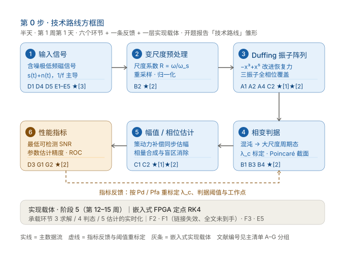

第 0 步：技术路线方框图（一页纸地图）
- 对应：阅读路线.md 第一节「第 0 步（半天，开学前或第 1 周第 1 天）：画一张地图」的过关产出
- 课题：基于混沌振子的极低频磁场微弱信号检测｜学期：第二学期第 1–16 周
- 整理日期：2026-11-13
- 矢量原图：第0步-技术路线方框图.svg（可单独打开、可插入 Word / 开题报告、可无损缩放打印）


主链（阅读路线第 0 步原文口径）：输入（含噪极低频磁信号）→ 变尺度预处理 → Duffing 振子 → 相变判据 → 幅值/相位估计 → 指标。
本图在此基础上补了两条线：指标反馈（虚线）与嵌入式实现载体（底部灰条），因为课题「主要内容」第 4、5 条与「预期目标」都要求落到板上并给出指标，缺了它们技术路线就交不了差。
零、学到什么程度（第 0 步验收口径）
一句话定深度：只建地图，不修路。全部内容停留在「知道名词、能讲清关系」，不进入 🅰 精读；不要求推公式、写代码、报数值。
1. 核心目标
- 半天内建立一张可自洽复述的全局地图：用六个环节把「含噪极低频磁信号」讲到「两项交付指标」，并说出每环靠哪组文献支撑。
- 明确分工而非求解：知道每个方框「进什么、出什么、归谁做、在第几周」，不要求会算其中任何一步。
- 产出一份「问题清单」：能说清自己还不知道什么、该去哪几篇里找。
2. 必须理解的概念（到「能说清是什么 / 为什么需要」为止）
- 六环节的功能与输入→输出：输入信号、变尺度、Duffing 阵列、相变判据、幅相估计、指标。
- 临界混沌态 / 大尺度周期态 / 间歇混合：只作定性区分，记住「临界态会混着规整片段」即可。
- 「相变判据必须可计算」：目测相图为何不够（B1 引言），知道判据不止一种。
- 两条辅助线：指标反馈（阈值按 $P_d/P_{fa}$ 重标定）、嵌入式载体（最终要落到板上）。
- A–G 是文献抽屉标签、★[2] 是母本；数据流顺序 ≠ 阅读顺序。
- 两项最终指标的名称与含义：最低可检测 SNR、参数估计精度。
3. 必须具备的能力
- 不看资料默画六环主链 + 两条辅助线，每环标出文献分组。
- 对每环用一句话说出「输入 → 输出 → 对应阶段」。
- 3 分钟口头讲清：课题做什么、难在哪、最终交什么。
- 会用 00-下载索引.md 查到某环该读哪几篇；知道 F1 失效、不提供替代链接。
- 能分辨「这是地图，不是最终系统框图」。
4. 可衡量的完成标准（逐条打勾）
- □ 方框图已画，或能用 SVG 原图 复述：六环 + 两条线齐全、每环有文献分组。
- □ 三处速读完（★[2] 摘要/引言/结论/图题/小标题、B1 引言、D1 摘要与分类框架），总耗时 ≤ 半天。
- □ 六环逐一口述输入→输出不卡壳；能答「环节 4 为什么不能用眼睛判」。
- □ 能说出两条写作口径：阈值不是普适常数、指标必须连实验条件一起报（只记规则，不要求会算）。
- □ 能说清下面第 6 节的「暂不深入」范围，且不把后续周次任务提前记成欠账。
- 验收方式：对着图给导师或同门讲 3 分钟；或默写六环的输入/输出单，逐条对答案。
5. 与后续步骤的衔接边界
- 交出：一张图（SVG + 本说明页）、六环文献分组索引、一份「待回答问题清单」。
- 不交：公式、代码、仿真曲线、相图、$\lambda_c$ 数值、SNR 数值、指标数值、参数表。
- 划界：本步结束 = 能提出正确的问题；一旦开始推方程、跑 RK4、扫阈值、算 $P_d$，就已越过边界，计入后续阶段，不算第 0 步的账。
- 图上环节编号只是交接锚点，本步不对任何环节的内部内容负责。
6. 只需了解、暂不深入
- Holmes–Duffing 方程、$-x^3+x^5$ 改进恢复力、势函数与平衡点：知道「有这样一个模型」即可。
- Melnikov / Lyapunov / 0-1 test / 多尺度熵 / Poincaré 判据的推导与实现：只记「判据有多种、各有坑」。
- 变尺度系数 $R$ 的取法、等效采样率、噪声混叠：只记「有这一环、有个坑」。
- 相量合成、相位窗口、120° 阵列覆盖：只记「初相有盲区，阵列用来补」。
- 幅相估计公式、Eq.(17) 一类估幅式：完全不碰。
- SNR 口径、$P_d/P_{fa}$ 计算、ROC、蒙特卡洛次数：只需知道最终要交两项指标。
- FPGA 定点化、位宽、资源、RK4 流水线：只记「最后要落到板上」。
- 0.72/0.73、0.734–0.736、−21 dB 等具体数字：听过即可，不作记忆点、不用于比较。
- 全文精读、参数表、公式推导、代码实现：一律留给后续。
一、这张图只用半天、只读三处
第 0 步的目的不是推公式，是建立全局地图。所以只读摘要、引言、结论、图题、小标题，不碰推导。
| 序 | 读什么 | 只读哪里 | 从图里得到哪个方框 |
|---|---|---|---|
| 1 | ★[2] Yang 等, Sensors 2023 PDF | 摘要 / 引言 / 结论 / 全部图题 / 方法节小标题 | 环节 2–6 的整条骨架（母本，一条龙全覆盖） |
| 2 | B1 黄泽徽等, 物理学报 2020 PDF | 引言（把相图分割、二分法、0-1、Poincaré 截面、Lyapunov 指数各家判据的优劣数了一遍，是免费的小型综述） | 环节 4「相变判据」为什么必须可计算 |
| 3 | D1 Zhao 等, MST 2021 PDF · 详细精读（超出第 0 步深度，阶段 1 再读） | 摘要 / 综述分类框架（「基于目标信号」vs「基于噪声」两派） | 环节 1「输入信号」与课题背景定位 |
三篇全文均已入库 ✅，半天的量刚好。不要在第 0 步碰 A1 的 Melnikov 推导或 G1 的检测理论——那是阶段 2、阶段 4 的事。
二、六个方框逐项对照
| 环节 | 输入 → 输出 | 图中标注的文献 | 对应阶段 / 周次 | 该环节的过关产出 |
|---|---|---|---|---|
| 1 输入信号 | 磁通门等传感器输出 → 含噪极低频磁信号 $s(t)+n(t)$ | D1 D4 D5 E1–E5 ★[3] | 阶段 1｜第 1–2 周 | 开题报告「国内外研究现状」约 800 字 + 一段信号/噪声模型假设（先写高斯白噪声 + 1/f 可调模型，待导师给实测数据后替换） |
| 2 变尺度预处理 | 极低频 $\omega_s$ → 尺度系数 $R=\omega/\omega_s$，重采样、归一化到振子固有频率附近 | B2 ★[2] | 阶段 2–3｜第 3–8 周 | 明确 $R$ 的取法与等效采样率；注意重采样带来的噪声混叠 |
| 3 Duffing 振子阵列 | 预处理后序列 + 内驱策动力 → $x(t)$ 相轨迹 | A1 A2 A4 C2 ★[1]★[2] | 阶段 2｜第 3–5 周 | 单振子 RK4 程序 + 两幅并列相图（混沌态 / 大尺度周期态）+ 可复现参数表 |
| 4 相变判据 | $x(t)$ → 0/1 判态结果；并标定 $\lambda_c$ | B1 B3 B4 ★[2] | 阶段 3｜第 6–8 周 | $\lambda$ 扫描曲线标出临界点 + 判态伪代码 + 初相位盲区区间 |
| 5 幅值 / 相位估计 | 判为「有」之后 → 幅值 $\hat\gamma$、初相 $\hat\theta$ | C1 C2 ★[1]★[2] | 阶段 4｜第 9–11 周 | 蒙特卡洛表：不同 SNR 下的幅值相对误差、相位误差 |
| 6 性能指标 | 全链路 → 最低可检测 SNR、参数估计精度 | D3 G1 G2 ★[2] | 阶段 4 / 6｜第 9–11 周、第 16 周 | $P_d$–SNR 曲线、ROC、误差–SNR 曲线；指标必须连实验条件一起报 |
⚠️ 图上位置是数据流顺序，不是阅读顺序。 阅读按 阅读路线.md 的六阶段问题链走（例如 B2 变尺度在阶段 3 才精读，但在数据流上排第 2 环）。编号 A–G 是「资料柜的抽屉标签」，不要按字母顺序读。
两个必须写进论文的坑（来自已跑通的复现）
- $\lambda_c$ 不是普适常数。论文 ★[2] 用 0.72 / 0.73，本机干净数值条件下跃变带落在约 0.734–0.740；换恢复力、步长、噪声带宽、判据都要重标。写论文时把自己标定的阈值和文献值并列，注明条件。
- 工作点存在三者不可兼得：离分岔越远越抗噪但越不灵敏、相位覆盖越差。复现里 $\lambda_0=0.720$ 时覆盖率 57.5% / 虚警 0%，0.730 时 97.3% / 2.5%，0.735 时 98.6% / 75%。这正是虚线反馈回路的由来。
详见 「2」的解读 与 notebook 实跑预览。
三、两条不是数据流的线
虚线 · 指标反馈（环节 6 → 环节 4）：拿到 $P_d/P_{fa}$、ROC 之后回头重标定 $\lambda_c$、判据阈值与工作点，而不是把阈值当成一次标定就锁死的常数。这是把「最低可检测信噪比」做成可信指标的前提，也是精读文档里 chaos-CFAR 想法的落点。
底部灰条 · 实现载体（阶段 5，第 12–15 周）：课题「主要内容」第 5 条要求嵌入式实现。F2 PDF 是最直接的蓝本（最大稳定域实时 RK4、流水线、数据分段并行、FIFO 分离阈值检测与波形恢复）。灰条承载环节 3 的求解、4 的判态、5 的估计三者的定点化。F1 的下载链接失效且无法打开，全文未到手，不提供替代链接；F3、E5 需校园网 / 文献传递，状态见 00-下载索引.md。
四、文献速查（图中编号，仅列已有本地全文的）
| 分组 | 可点开的 PDF |
|---|---|
| ★ 课题自带 | ★[1] PDF｜★[2] PDF｜★[3] PDF |
| A 理论源头 | A5 PDF（A1 / A2 / A4 需订阅或纸本，查下载索引） |
| B 判据与变尺度 | B1 PDF｜B2 PDF｜B3 PDF｜B4 PDF |
| C 参数估计 | C1 PDF｜C2 PDF |
| D 磁场背景 | D1 PDF｜D5 PDF（D4 / D3 未入库） |
| E 导师组 | E4 PDF |
| F 嵌入式 | F2 PDF（F1 链接失效且无法打开；F3 / F4 未入库） |
| G 指标与规范 | G2 PDF（G1 纸本） |
状态图例与完整 30 条清单见 00-下载索引.md 与 参考资料主清单。著录一律按 GB/T 7714—2015，30 条题录见 参考文献.bib。
五、怎么用这张图
- 开题报告：把 SVG 原图 直接拖进 Word（矢量、放大不糊），或在本页打印成 PDF；图下配一句「图中编号为参考文献清单分组，详见第 × 章」。
- 答辩 / 周报：按六个方框逐环汇报进度，每个方框对应一个阶段和一个过关产出，不会漏项。
- 写作时的口径：环节 6 的两个指标（最低可检测 SNR、参数估计精度）必须连 $P_d/P_{fa}$、噪声带宽、采样率、判据、蒙特卡洛次数一起报；文献里的 −21 / −18 / −12~−16 dB 实验条件互不相同，不可横向比较。
- 图的边界：这是第 0 步的「地图」，不是最终系统框图。等导师给出实测磁场噪声数据、以及环节 3–5 定点化方案确定后，应把环节 1 的信号模型、环节 4 的判据、灰条里的位宽与资源一并细化重画。